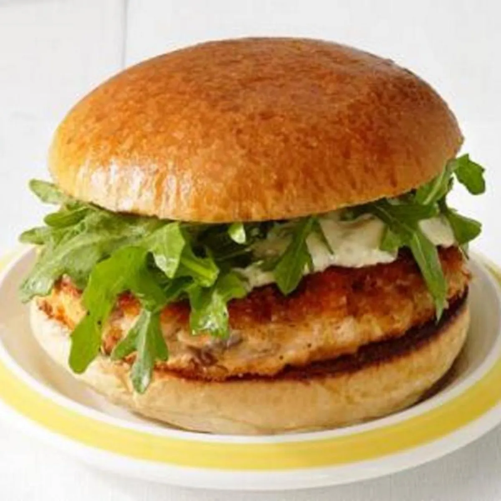

Salmon Burger Recipe

Description
This is a fast make burger with salmon and is ready only for 25 min.
Ingredients
- Cooking spray
- 60g red bell pepper, diced
- 60g yellow bell pepper, diced
- 2 cloves garlic, minced
- 80g panko
- 1kg salmon fillets, skinned and finely chopped
- 1 large egg, lightly beaten
- 2 cloves garlic, minced
- 1 tbsp soy sauce
- 1 tsp fresh lemon juice
- 1/2 tsp salt
- 8 buttered and toasted baps
- 8 lettuce leaves
- 8 slices tomato
- For the sesame mayonnaise
- 250ml mayonnaise
- 2 cloves garlic, minced
- 1/2 tsp sesame oil
- 1 tsp soy sauce
Steps to make it
- In a medium bowl, combine peppers, panko, garlic, and salmon.
- In a small bowl, combine egg, soy sauce, lemon juice, and salt; add to pepper mixture, tossing gently to combine. Form mixture into 8 patties.
- Lightly coat a griddle pan or skillet with cooking spray. Heat over medium-high heat until hot. Griddle or cook patties, 5 minutes per side, or until desired degree of doneness.
- Spread Sesame Mayonnaise evenly over toasted buns. Top each with a lettuce leaf, tomato slice, and salmon patty. Cover with tops of baps.
- For the sesame mayonnaise: In a small bowl, combine all ingredients. Cover and chill. Yields: 1 cup
Back to top
Back to main page